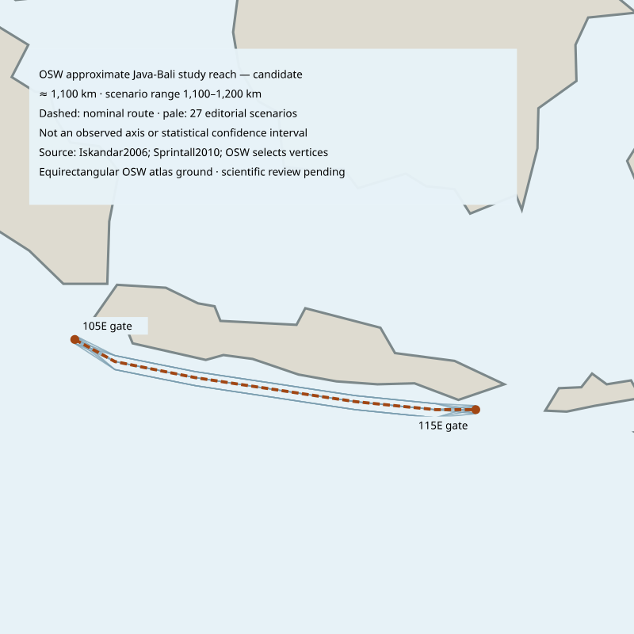

South Java reference reach
An editorial study reach south of Java and Bali, between 105°E and 115°E.
- Reference distance
- ≈ 1,100 km
- Drawing envelope
- 1,100–1,200 km
- Scope
- Partial reference reach

Open the full reference map
Vertices and gates are OSW drawing choices. This distance is not a measurement of the entire South Java Current.
Candidate: awaiting query integration. Atlas and record links activate after installation.
How this reference is measured
The nominal WGS84 polyline is 1,127.329 km. Three drawings and independent endpoint shifts produce 27 cases, spanning 1,117.074–1,150.703 km. Public values are rounded to 100 km; the drawing envelope is rounded outward. It is not a seasonal range or confidence interval.
All 27 drawings passed the OSW coarse ground and Natural Earth1:10 million coastline checks at no more than 1 km sampling. This establishes geographic screening, not a velocity axis or a physical current boundary.
Source scope
The 1990–2003 model context and 2004–2006 Ombai observations remain separate. The source model's upper 150 m analysis band is not a measured thickness. The undercurrent, Savu-Ombai extension, physical widths and annual geometry are excluded from this drawing.